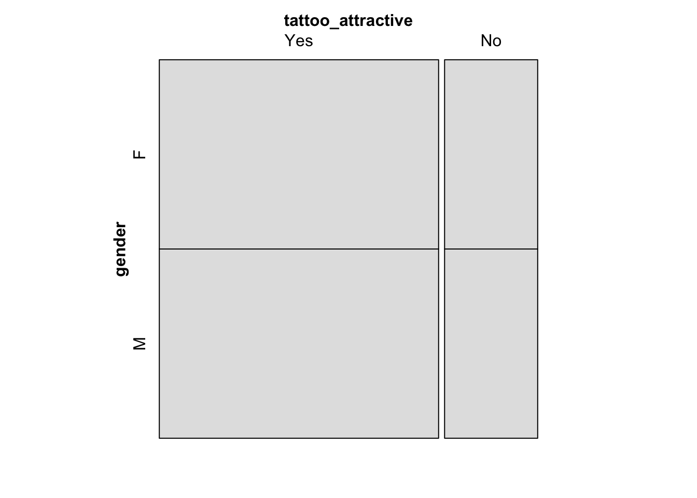
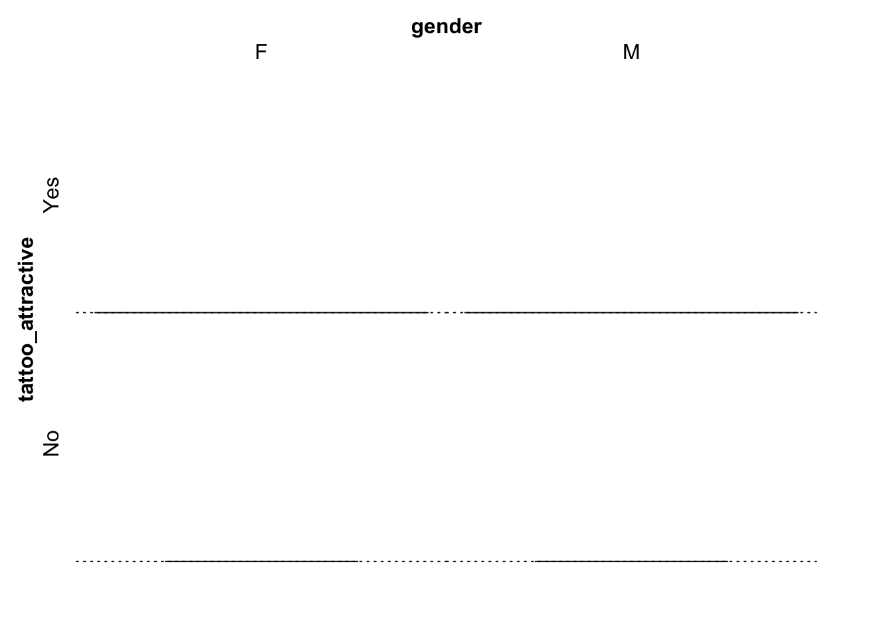

This data set investigates the perception of Srishti students without tattoos on whether tattoos enhance a person’s overall attractiveness.
Data Dictionary
Qualitative Variables
Name: Factor indicating name of the participant.
gender: Factor indicating sex. Gender refers to either Male or Female.
tattoo_attractive: Factor indicating whether the participant finds tattoos attractive.
Our questions/ assumptions before performing EDA:
Does gender influence whether someone finds tattoos attractive?
Most people might find tattoos attractive, given the social and cultural factors at play in Srishti.
Setting up the libraries
library(tidyverse)
── Attaching core tidyverse packages ──────────────────────── tidyverse 2.0.0 ──
✔ dplyr 1.1.4 ✔ readr 2.1.5
✔ forcats 1.0.0 ✔ stringr 1.5.2
✔ ggplot2 4.0.0 ✔ tibble 3.3.0
✔ lubridate 1.9.4 ✔ tidyr 1.3.1
✔ purrr 1.1.0
── Conflicts ────────────────────────────────────────── tidyverse_conflicts() ──
✖ dplyr::filter() masks stats::filter()
✖ dplyr::lag() masks stats::lag()
ℹ Use the conflicted package (<http://conflicted.r-lib.org/>) to force all conflicts to become errors
library(mosaic) # Our go-to package
Registered S3 method overwritten by 'mosaic':
method from
fortify.SpatialPolygonsDataFrame ggplot2
The 'mosaic' package masks several functions from core packages in order to add
additional features. The original behavior of these functions should not be affected by this.
Attaching package: 'mosaic'
The following object is masked from 'package:Matrix':
mean
The following objects are masked from 'package:dplyr':
count, do, tally
The following object is masked from 'package:purrr':
cross
The following object is masked from 'package:ggplot2':
stat
The following objects are masked from 'package:stats':
binom.test, cor, cor.test, cov, fivenum, IQR, median, prop.test,
quantile, sd, t.test, var
The following objects are masked from 'package:base':
max, mean, min, prod, range, sample, sum
library(ggformula)library(infer) # An alternative package for inference using tidy data
Attaching package: 'infer'
The following objects are masked from 'package:mosaic':
prop_test, t_test
library(broom) # Clean test results in tibble formlibrary(skimr) # data inspection
Attaching package: 'skimr'
The following object is masked from 'package:mosaic':
n_missing
library(tinytable) # Pretty Tables
Attaching package: 'tinytable'
The following object is masked from 'package:ggplot2':
theme_void
library(kableExtra) # Pretty Tables
Attaching package: 'kableExtra'
The following object is masked from 'package:dplyr':
group_rows
library(ggprism) # Prism-like ggplot themeslibrary(resampledata3) # Datasets from Chihara and Hesterberg's book
Attaching package: 'resampledata3'
The following object is masked from 'package:datasets':
Titanic
library(openintro) # datasets
Loading required package: airports
Loading required package: cherryblossom
Loading required package: usdata
Attaching package: 'openintro'
The following object is masked from 'package:mosaic':
dotPlot
The following objects are masked from 'package:lattice':
ethanol, lsegments
library(infer)library(vcd)
Loading required package: grid
Attaching package: 'vcd'
The following object is masked from 'package:mosaic':
mplot
library(resampledata)
Attaching package: 'resampledata'
The following objects are masked from 'package:resampledata3':
Bushmeat, ChiMarathonMen, Cuckoos, FlightDelays, Groceries,
IceCream, MobileAds, NCBirths2004, Olympics2012, Phillies2009,
Recidivism
The following object is masked from 'package:datasets':
Titanic
library(openintro)library(readr)library(naniar)
Attaching package: 'naniar'
The following object is masked from 'package:skimr':
n_complete
library(janitor)
Attaching package: 'janitor'
The following objects are masked from 'package:stats':
chisq.test, fisher.test
library(DT)library(crosstable)
Attaching package: 'crosstable'
The following object is masked from 'package:purrr':
compact
library(geofacet)library(ggplot2)
Reading The Data
Tattoo <- readr::read_delim("~/Downloads/Datasets for A3/tattooAttraction.csv") %>% janitor::clean_names(case ="snake") %>% dplyr::glimpse()
Rows: 40 Columns: 3
── Column specification ────────────────────────────────────────────────────────
Delimiter: ","
chr (3): Name, Gender, Tattoo_Attractive
ℹ Use `spec()` to retrieve the full column specification for this data.
ℹ Specify the column types or set `show_col_types = FALSE` to quiet this message.
# A tibble: 40 × 3
name gender tattoo_attractive
<chr> <chr> <chr>
1 Aadya F Yes
2 Abhinav M Yes
3 Aditya M No
4 Akash M Yes
5 Amit M No
6 Amogh M Yes
7 Anurag M Yes
8 Arnav M Yes
9 Aryan M Yes
10 Ashmita F No
# ℹ 30 more rows
Rows: 40
Columns: 2
$ tattoo_attractive <fct> Yes, Yes, No, Yes, No, Yes, Yes, Yes, Yes, No, Yes, …
$ gender <fct> F, M, M, M, M, M, M, M, M, F, M, F, M, F, M, F, F, M…
Let’s get a count of our data
Tattoo1 %>%count(gender, tattoo_attractive)
# A tibble: 4 × 3
gender tattoo_attractive n
<fct> <fct> <int>
1 F Yes 15
2 F No 5
3 M Yes 15
4 M No 5
A perfect split of preferences? Wonder how statistically possible this is. For now let us make some graphs.
Tattoo1 %>%gf_bar(~tattoo_attractive, fill =~gender,position ="dodge") %>%gf_labs(x="gender",y="count",title="Distribution of Tattoo Attractiveness Responses Across Genders",subtitle ="Responses from students who do not have tattoos themselves")
From the chart, it appears that both male and female Srishti students show similar patterns in their responses. This suggests that gender does not play a major role in perceptions of tattoo attractiveness: both male and female students tend to view tattoos positively to a similar extent.
vcd::mosaic(gender ~ tattoo_attractive, data = Tattoo1, direction ="v", gp = shading_max, legend =FALSE)
vcd::mosaic(gender ~ tattoo_attractive, data = Tattoo1, type ="expected", direction ="v", gp = shading_max, legend =FALSE)

vcd::assoc(gender ~ tattoo_attractive, data = Tattoo1, gp = shading_max, legend =FALSE)

Although this mosaic chart doesn’t say much, it is pretty interesting to see how there is no deviation across the observed chart or the assoc chart. Let us look at some other graphs instead.
Tattoo1 %>%gf_props(~tattoo_attractive,fill =~gender,position ="fill" ) %>%gf_labs(x ="Do they find Tattoos Attractive?",title ="Proportion of Tattoo Attractiveness Responses Across Genders",subtitle ="Filled bar graph" )
This further validates our hypothesis above.
Inference
Tattoo1 %>%summarize(prop =prop(tattoo_attractive, success ="Yes"), n =n())
# A tibble: 1 × 2
prop n
<dbl> <int>
1 0.75 40
Out of 40 responses, 75% of the sample set found Tattoos attractive. Let us quickly visualise that:
Tattoo1 %>%gf_bar(~tattoo_attractive) %>%gf_labs(x ="Do they find tattoos attractive?",title ="Student Opinions on Tattoo Attractiveness",subtitle ="Responses from students who do not have tattoos themselves" )
doing a binom test
mosaic::binom.test(~tattoo_attractive, data = Tattoo1, success ="Yes")
data: Tattoo1$tattoo_attractive [with success = Yes]
number of successes = 30, number of trials = 40, p-value = 0.002221
alternative hypothesis: true probability of success is not equal to 0.5
95 percent confidence interval:
0.5880380 0.8730852
sample estimates:
probability of success
0.75
Awesome! let us turn it into a readable table:
mosaic::binom.test(~tattoo_attractive, data = Tattoo1, success ="Yes") %>% broom::tidy()
Among 40 Srishti students (without tattoos), 75% find tattoos attractive. The p.value is shown to be 0.002, which is lesser than 0.05; This is statistically significant! Confidence Intervals range from 58.8% and 87.3%, and does not include 50% in them. We can confidently conclude that a majority of students find tattoos attractive.
Conclusion:
The data shows that gender doesn’t really make a difference in how Srishti students view tattoos: both male and female students seem to find them equally attractive.
About 75% of students without tattoos said they find tattoos attractive, and the binomial test confirms this is statistically significant (p = 0.002). Since the confidence interval (58.8%–87.3%) doesn’t include 50%, we can confidently say that most students think tattoos make a person more attractive.
Overall, the results suggest that tattoos are seen positively at Srishti, and the perception isn’t influenced much by gender.